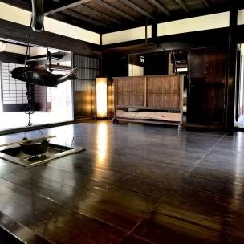
住宅にとって最も大事な尺度とは？
こんにちは、富山で自然素材にこだわるホンモノの家。フジ創アイノスです。 「家は三度建てなければわからない」と 言われるような経験を必要としているようです。 企画住宅には、その経験値が含まれています。 一方、自由設計の家を
続きを読む →FUJISOU AINOS JOURNAL
家づくりのこと、暮らしのこと。
日々の想いを、お伝えします。
新しい記事から 39・40ページ

こんにちは、富山で自然素材にこだわるホンモノの家。フジ創アイノスです。 「家は三度建てなければわからない」と 言われるような経験を必要としているようです。 企画住宅には、その経験値が含まれています。 一方、自由設計の家を
続きを読む →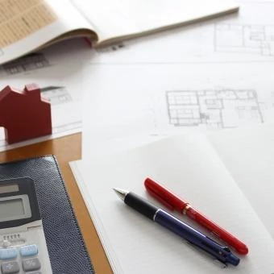
こんにちは、富山で自然素材にこだわるホンモノの家。フジ創アイノスです。 日本が屈指の工業国であることは、世界中で認められていることです。様々な製品の生産性を高め、高い技術や品質を獲得してきました。住宅も、同じ工業化の中に
続きを読む →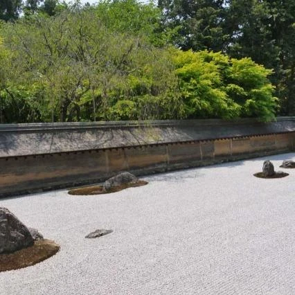
こんにちは、富山で自然素材にこだわるホンモノの家。フジ創アイノスです。 世界中から、インバウンドで旅行客が訪れています。 関西空港に国内便で降りても、歩いてる方はアジアやヨーロッパはじめ、海外の方々で一杯です。 京都に向
続きを読む →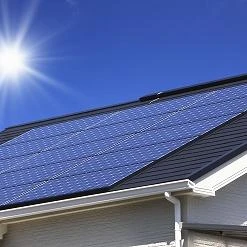
こんにちは、富山で自然素材にこだわるホンモノの家。フジ創アイノスです。 2015年末に開かれたCOPパリ会議において日本は2030年までに GDPあたりの温室効果ガスを13年比26％削減することを約束した。 その内容を詳
続きを読む →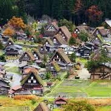
こんにちは、富山で自然素材にこだわるホンモノの家。フジ創アイノスです。 家は、その地域の気候や文化に根ざしそれぞれの特徴があるものです。 建築家は建物の経つべき地霊に聴いて、湧き上がっていく形をイメージしてゆきます。 で
続きを読む →こんにちは、富山で自然素材にこだわるホンモノの家。フジ創アイノスです。 自分の家づくりを、どのように進めれば良いのか迷うことはいろいろとあるものです。 特に設計のこととなると自分の希望はかなえたいと思う反面 できれば人の
続きを読む →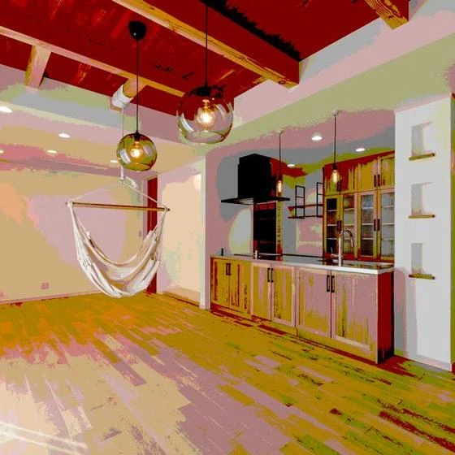
こんにちは、富山で自然素材にこだわるホンモノの家。フジ創アイノスです。 【生涯のコストを考えるなら賃貸ではなく持ち家をえらぶべき？】 返済期間が終わると持ち家のコストは、管理費、修繕積立金 固定資産税のみとなり、毎月の家
続きを読む →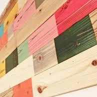
こんにちは、富山で自然素材にこだわるホンモノの家。フジ創アイノスです。 木目が活き、カラーが絶妙に調和している仕上がり感に、使われた皆様が大変驚かれます。 リフォーム業者にU-OILを指定する方もいらっしゃいます。 また
続きを読む →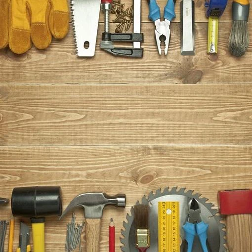
こんにちは、富山で自然素材にこだわるホンモノの家。フジ創アイノスです。 そもそも、ビニールクロスがここまで広まった理由は何よりも コストの安さとメンテナンスの容易さです。 例えば、汚れがついても、中性洗剤を使って拭き取れ
続きを読む →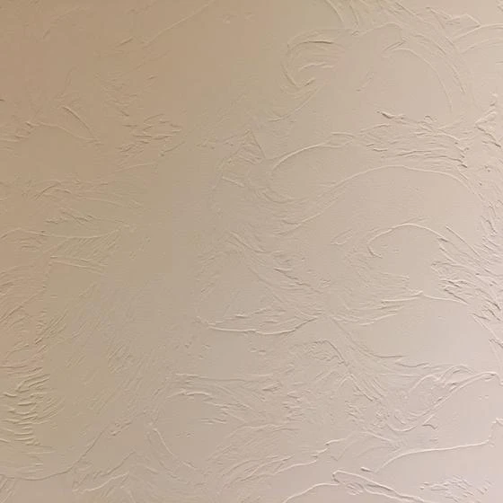
こんにちは、富山で自然素材にこだわるホンモノの家。フジ創アイノスです。 壁に使う自然素材にも、いろいろあります。 床と同じ木材を使うとか、和紙を張るケースもあります。 もちろん様々な塗り壁も、事前素材からできているものが
続きを読む →こんにちは、富山で自然素材にこだわるホンモノの家。フジ創アイノスです。 自然素材の特徴の一つに、一つとして同じものがないことも挙げられます。 樹木が育つためには葉を繁らせるための枝が必要であり、枝の跡が製材した 後に節と
続きを読む →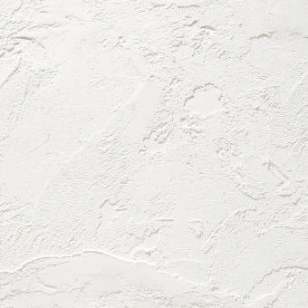
こんにちは、富山で自然素材にこだわるホンモノの家。フジ創アイノスです。 漆喰の塗り壁は湿度にあわせて湿気を吸収＆放出し 快適な空気環境をつくる自然の調湿機能があります 独特の風合いは温かみにあふれ 人の心をほっと和ませる
続きを読む →こんにちは、富山で自然素材にこだわるホンモノの家。フジ創アイノスです。 木材が仕上げ材に使われるケースが多いのは床です。 住宅の床は、板張りのフローリングが大多数です。 このフローリングにもたくさんの種類があって、木の様
続きを読む →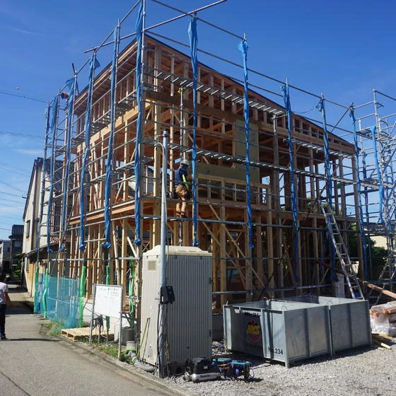
富山で自然素材にこだわるホンモノの家。フジ創アイノスです １０月５日、射水市Ｏ様邸 さわやかな潮風のにおい漂う街の一角 天気も晴天に恵まれ、青空の下 柱や梁が組み立てられてゆきました ------------------
続きを読む →こんにちは、富山で自然素材にこだわるホンモノの家。フジ創アイノスです。 戸建住宅のほとんどは木造で建てられています。森で育った木材が伐り出されて、住宅の構造材となります。この木材はまさに自然素材の代表格です。自然が生み出
続きを読む →こんにちは、富山で自然素材にこだわるホンモノの家。フジ創アイノスです。 例えば食事の時にお椀１つを持って触った感覚で、漆器とプラスチックを区別している瞬間がありませんか。焼き物と比較すれば重さだけでもわかりますが、何とな
続きを読む →こんにちは、富山で自然素材にこだわるホンモノの家。フジ創アイノスです。 今、私達の身の回りにあるものを、改めて冷静に見てみましょう。 どれだけプラスチックの製品が多くなっていることでしょうか。 レジ復路やストローは、買い
続きを読む →こんにちは、富山で自然素材にこだわるホンモノの家。フジ創アイノスです。 よくありますよね。『言った』『言わない』事件。 「明日はお弁当はいらないから」 翌日。 「いらないなんて聞いてない！作ったじゃないの！」 「ちゃんと
続きを読む →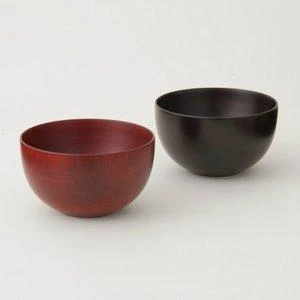
こんにちは、富山で自然素材にこだわるホンモノの家。フジ創アイノスです。 英語でCHINAは磁器、JAPANは漆器を表します。東アジアの国名が、こうしてそれぞれの器を表すのは、国名と品名のどちらが先かは分かりませんがとても
続きを読む →こんにちは、富山で自然素材にこだわるホンモノの家。フジ創アイノスです。 木に塗装する国産の自然塗料U-OILを岩手県の大自然の中で製造、販売しているのが 株式会社シオン。亜麻仁油や天然顔料から作られた人にやさしい自然塗料
続きを読む →こんにちは、富山で自然素材にこだわるホンモノの家。フジ創アイノスです。 地球全体を一つのレンズに見立てて、 ついにブラックホールの姿の撮影に成功しました。 その映像を、興味深く見た人も多いと思います。 光さえも吸い込まれ
続きを読む →こんにちは、富山で自然素材にこだわるホンモノの家。フジ創アイノスです。 もともとラベンダーは「鎮静効果があるアロマ」とされ、眠る前に寝室などで香らせると良いといわれているものです。ですから、高血圧の人や高ストレスの人の状
続きを読む →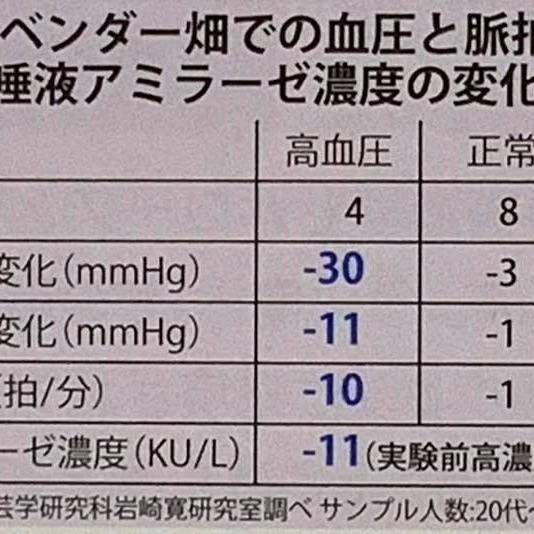
こんにちは、富山で自然素材にこだわるホンモノの家。フジ創アイノスです。 実際にハーブにどのような効果があるか具体的にご紹介しましょう。 千葉大学園芸学部の岩崎寛先生は緑と健康をクロスさせた新たな分野で、園芸療法やアロマセ
続きを読む →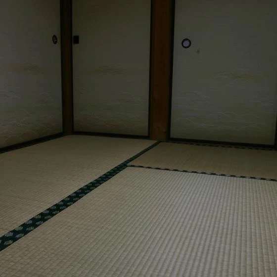
こんにちは、富山で自然素材にこだわるホンモノの家。フジ創アイノスです。 西洋の建築家が、桂離宮などの日本の建物などを訪れて、 深い感銘を受けたこと知られています。その中でも、もっとも 驚いたであろうことは生活空間家具がな
続きを読む →